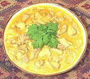

|
Chicken in Coconut CreamIndia (north) | ||||
| Serves: Effort: Sched: DoAhead: |
2 main ** 1-1/4 hrs Better |
Softly spiced and cream color, this recipe should work for guests unfamiliar with Indian food. In the northern style, browning is avoided to keep the color light. It's also a bit rich (see Note-3). Serve with plenty of basmati rice. | |||
|
1 4 ---- 4 6 1 ---- 8 3 1/4 ---- 1/4 1/4 1/2 ---- 2 8 ---- |
# oz --- in --- cl in --- t t t --- T oz -- |
Chicken meat (1) Onion -- Aromatic mix Cardamoms, green Cloves whole Cinnamon stick -- Almond mix Almonds, blanched Garlic Ginger root -- Turmeric mix Turmeric Chili Powder (2) Salt ---------- Oil Coconut Cream (3) -- Garnish Cilantro leaves |
PREP - (20 min)
|
smc_chickcococream1 050221 r 081010 cic213 -
www.clovegarden.com
©Andrew Grygus - agryg@aaxnet.com - Linking to and
non-commercial use of this page is permitted.